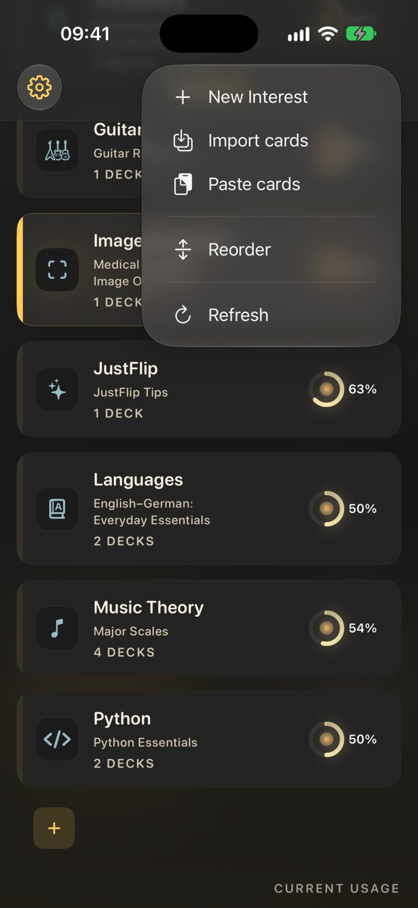
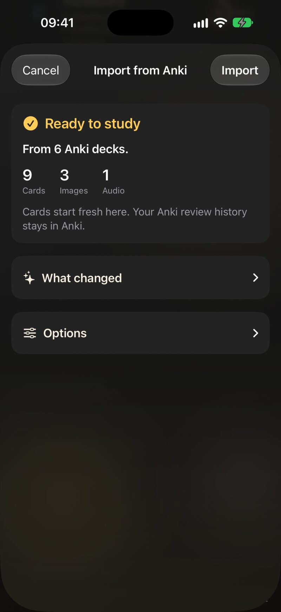
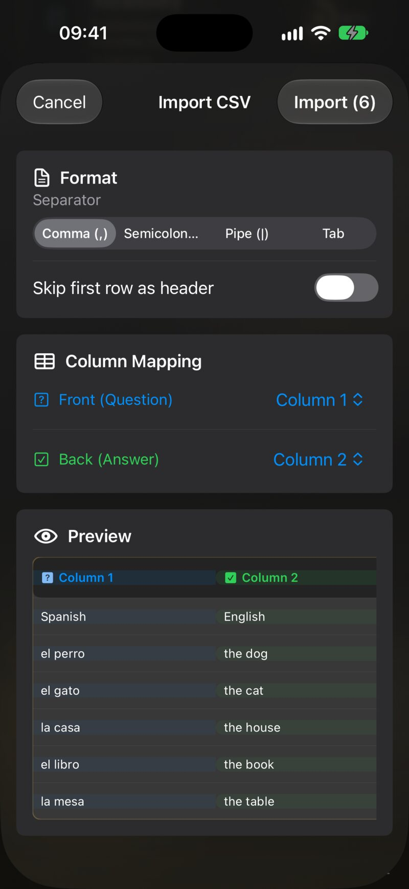

5.1 가져오기는 어디에 있나요
모든 가져오기는 관심사 화면에서 시작해요. JustFlip!은 파일 이름과 내용을 보고 파일을 알아보기 때문에, 같은 진입점에서 모든 형식을 받을 수 있어요.
| 기기 | 방법 |
|---|---|
| iPhone, iPad | 추가 또는 가져오기 메뉴(트레이 버튼) → 카드 가져오기 |
| iPhone, iPad | 파일, Mail, Safari에서 파일을 공유하거나 JustFlip!으로 열기 |
| iPad, Mac | 파일을 관심사 목록으로 드래그 — 여기에 놓아 가져오기가 표시돼요 |
| Mac | 파일 › Import Cards…(⇧⌘I) 또는 파일 › Import Interest Archive… |
| 모두 | 관심사를 길게 누르기 → 카드 가져오기: CSV나 Anki 파일을 그 관심사로 바로 가져와요 |
| 모두 | 추가 또는 가져오기 → 카드 붙여넣기: 복사한 카드(카드 붙여넣기 참고) |
기본 가져오기는 여러 파일을 한 번에, 폴더째로도 받아요. 폴더 안의 지원되는 파일이 모두 가져와져요.

5.1.1 파일별로 어떻게 되나요
| 파일 | 무엇인가요 | 들어가는 곳 |
|---|---|---|
.apkg, .colpkg |
Anki 덱 또는 컬렉션 | 직접 고른 관심사. Anki 덱 하나당 덱 하나 |
.csv |
한 행에 카드 한 장인 스프레드시트 | 직접 고른 관심사. 항상 새 덱 |
.flashcards |
텍스트만 있는 덱 파일 — AI가 만들었거나 엄선된 덱 | 파일 안에 지정된 관심사 |
.flashcards.zip |
그림과 소리가 있는 덱 파일, 또는 내보낸 관심사 | 파일 안에 지정된 관심사 |
Anki 파일과 CSV 파일은 JustFlip!이 먼저 카드를 어디에 넣을지 물어봐요. 카드 가져오기 시트에는 관심사 메뉴(새 관심사… 포함)가 있고, 스프레드시트라면 덱 이름도 있어요. 계속을 탭하세요.
가져오기로 새 관심사가 만들어질 때는 시트에 기기 검색에 포함도 나타나요. 그 관심사의 카드가 Spotlight에 나타날 수 있을지를 정하는 옵션이에요(8장).
5.2 Anki 덱
JustFlip!은 예전 버전과 최신 버전 Anki의 덱
패키지(.apkg)와 컬렉션 패키지(.colpkg)를
가져올 수 있어요. Anki에서 파일 › 내보내기를 사용해
Anki 덱 패키지를 고르고, 미디어를 포함하세요. 그런 다음 위에서
설명한 대로 파일을 가져오세요.
복습 진도도 함께 가져오려면 내보낼 때 Include scheduling information(일정 정보 포함)도 체크하세요.
약속은 간단해요. 학습 내용은 넘어오고, Anki의 표현 방식은 넘어오지 않아요. 단어, 그림, 소리, 수식, 태그는 들어와요. 복습 진도도 함께 가져올 수 있어요. Anki의 스타일과 스크립트는 남겨 둬요.
5.2.1 넘어오는 것
- 모든 카드. Anki 카드 하나하나가 JustFlip! 카드가 돼요. 앞면/뒷면, 역방향, 선택적 역방향 노트 유형이 모두 작동해요.
- 나뉘는 클로즈 노트.
{{c1::…}},{{c2::…}},{{c3::…}}가 있는 노트는 Anki에서와 똑같이 번호마다 하나씩, JustFlip! 카드 세 장이 돼요. 각 카드는 자기 번호만 빈칸으로 만들고 나머지는 채워진 채로 보여 줘요.{{c1::Paris::capital}}같은 힌트도 유지돼요. - 그림은 나타나는 순서대로 텍스트 안에 들어가요. Anki 그림의 대체 텍스트는 음성이 그 그림 대신 읽는 내용이 돼요.
- 소리. 한 면에 있는 모든
[sound:…]가 순서대로 유지돼요(4장). - 이미지 가리기는 Anki 자체 도구로 만든 것과 예전의 Image Occlusion Enhanced 애드온으로 만든 것 모두 JustFlip!의 이미지 가리기 카드가 돼요.
- 서식: 굵게, 기울임꼴, 목록, 링크, 작은 표, 수식, 아래 첨자와 위 첨자.
- 태그.
- 평평하게 펼쳐지는 덱 구조. JustFlip!에는 하위 덱이
없기 때문에
Languages::Spanish::Verbs는 Languages / Spanish / Verbs라는 덱 하나가 돼요. - 복습 진도(내보내기에 일정 정보가 포함된 경우). 공부한 카드는 각각 간격, 용이도, 다음 복습일, 망각 횟수를 그대로 유지하고, 복습 로그도 기록으로 함께 넘어와요. 몇 년 동안 공부한 덱도 하던 곳에서 이어서 할 수 있어요. 일시 중지된 카드는 졸업된 카드로 들어와요. 모든 카드를 새 카드로 시작하려면 가져오기 시트에서 Anki 진도 유지를 끄세요.
5.2.2 Anki에 남는 것
- Anki의 FSRS 매개변수. Anki에서 FSRS를 쓰고 있다면 그 매개변수와 각 카드의 기억 상태는 가져오지 않아요. 카드는 간격, 복습일, 복습 로그를 유지하고, 용이도는 기본값이 돼요.
- 공유 덱의 진도. 내려받기만 하고 공부한 적 없는 덱은 넘겨줄 기록이 없어서 카드가 새 카드로 시작해요.
- 스타일. 사용자 정의 CSS, 글꼴, 색은 단순하게 정리돼요.
- 코드. JavaScript와 애드온은 실행되지 않고, 보관되지도 않아요.
- 온라인에 있는 것. 원격 이미지, 삽입된 페이지, iframe은 불러오지 않아요.
- 비디오.
- 플래그. Anki의 카드 플래그는 넘어오지 않아요.
- 반복되는 질문. Anki는 정답 면에 질문을 다시 보여 주지만, JustFlip!은 카드를 그 자리에서 뒤집기 때문에 그 사본은 빠져요. 단, 클로즈 카드는 예외예요. 거기서는 반복되는 문장 자체가 정답이니까요.
Anki에서 노트 300개로 보이는 덱이 카드 700장으로 들어올 수 있어요. 중복된 게 아니에요. Anki에서도 JustFlip!에서도 클로즈 번호 하나가 카드 한 장이에요. 가져오기 시트에 표시되는 숫자는 카드 수예요.
Anki는 필드가 어떤 언어인지 저장하지 않기 때문에, 가져온 카드는 모두 언어가 없음으로 설정된 상태로 시작해요. 그리고 언어가 없는 면은 절대 소리 내어 읽히지 않아요(3장). 가져온 덱을 들으며 공부하고 싶다면 카드에 언어를 설정하세요.
5.2.3 가져오기 시트
추가 또는 가져오기 메뉴, 파일 앱, 또는 드래그로 Anki 파일 하나를 가져오면 Anki에서 가져오기가 열려요. 먼저 패키지를 읽고 (패키지를 확인하는 중…, 압축을 푸는 중…, 카드를 읽는 중…) 나서 학습 준비 완료를 보여 줘요. 찾아낸 Anki 덱 수와 카드, 이미지, 오디오 수가 표시돼요.
패키지에 이미 공부한 카드가 있으면 시트에 Anki 진도 유지도 나타나요. 기본으로 켜져 있어요. 켜 두면 그 카드들은 Anki의 일정과 복습 기록을 유지해요. 끄면 모든 카드가 처음부터 시작해요.

바뀐 점 아래에는 가져오기 보고서가 있어요. 확정하기 전에 알아 둘 만한 사항마다 쉬운 문장 하나씩이에요. 예를 들면:
- 카드 240장이 Anki의 일정과 복습 기록을 유지합니다. (공유 덱이거나 Anki 진도 유지를 끈 경우: 카드는 여기서 처음부터 시작합니다. Anki 복습 기록은 Anki에 남습니다.)
- 답면이 더 이상 질문을 반복하지 않습니다. JustFlip이 뒤집는 동안 질문을 계속 보여 줍니다.
- 이미지 12개를 읽을 수 없어 제외했습니다.
- 질문 면이 비어 있는 카드 3장을 건너뛰었습니다.
- Anki 애드온에서 온 필드 2개를 제외했습니다.
카드 안에 무언가가 기록되지는 않아요. 빠진 그림은 그냥 빠져 있을 뿐이고, 그 사실을 알려 주는 곳은 보고서뿐이에요.
옵션 아래에는 가져오기로 만들어질 덱 목록과, 선택지 하나가 있어요. 바로 이미 가지고 있는 카드라면이에요.
| 옵션 | 이 패키지에서 이미 가져온 카드 |
|---|---|
| 새 사본 추가 | 그대로 두고, 패키지 전체를 새 덱으로 다시 추가해요. 기본값 |
| 이미 있는 것은 건너뛰기 | 그대로 유지하고, 새 카드만 추가해요 |
| 업데이트하고 진행 상황 유지 | 텍스트, 그림, 태그를 파일 내용으로 새로 고치고, 일정은 건드리지 않아요 |
JustFlip!은 가져온 카드가 각각 어느 Anki 노트와 카드에서 왔는지 기억하기 때문에, JustFlip!에서 질문을 편집한 뒤에도 짝을 맞출 수 있어요. 가져오기를 탭해 카드를 추가하세요.
Anki에서 계속 작업하다가 다시 내보내고, 업데이트하고 진행 상황 유지로 가져오세요. 수정 사항은 반영되고, 새 노트는 추가되며, JustFlip!의 일정은 그대로 유지돼요.
Anki 파일을 시트 없이, 항상 새 사본으로 곧바로 가져오는 경로가 두 가지 있어요. 관심사 자체 메뉴의 카드 가져오기, 그리고 여러 Anki 파일을 한 번에 고를 때예요. 이미 있는 카드를 건너뛰거나 업데이트하려면 추가 또는 가져오기 메뉴에서 파일을 하나씩 가져오세요.
5.3 스프레드시트(CSV)
CSV 파일은 목록을 JustFlip!으로 옮기는 가장 간단한 방법이에요. 단어장, 용어집, 다른 앱에서 내보낸 파일 같은 것들이요. 행 하나가 카드 한 장이고, 한 열은 질문, 다른 열은 정답이에요.
질문,정답
el perro,개
el gato,고양이
"la casa, el hogar",집계속을 누르면 CSV 가져오기에 실시간 미리보기가 표시돼요.
- 구분 기호 — 쉼표, 세미콜론, 파이프, 탭 중 하나예요. JustFlip!이 처음 몇 행을 보고 추측하니, 열이 이상해 보이면 바꾸세요.
- 첫 번째 행을 머리글로 건너뛰기 — 처음에는 꺼져 있어요. 첫 행에 열 제목이 있다면 켜세요.
- 열 매핑 — 어느 열이 앞면(질문)이고 어느 열이 뒷면(정답)인지 고르세요. 다른 열은 무시돼요.
- 미리보기 — 처음 몇 행이 어떻게 읽힐지 보여 줘요.
괜찮아 보이면 가져오기(N)를 탭하세요.

다시 시도하는 수고를 덜어 줄 몇 가지 세부 사항:
- 필드에 구분 기호나 줄바꿈이 들어 있으면 큰따옴표로 감싸세요. 그 안의
따옴표는
""로 쓰세요. - 텍스트에는 3장의 카드 마크업(굵게, 수식, 클로즈)을 쓸 수 있어요. CSV
셀의
{{c1::…}}은 빈칸이 모두 들어 있는 한 장의 카드로 남아요. CSV 카드는 Anki 클로즈 노트처럼 나뉘지 않아요. - 질문이 비어 있는 행은 건너뛰어요. 정답이 비어 있는 행은 정답이 없는 카드로 가져와요.
- CSV 카드에는 언어, 그림, 태그가 없어요.
첫 번째 행을 머리글로 건너뛰기는 꺼진 상태로 시작해요. 깜빡하면 열 제목이 “질문”이라는 질문에 정답이 “정답”인 카드가 돼요. 가져오기 전에 미리보기의 첫 행을 확인하세요.
CSV를 가져올 때마다 새 덱이 만들어져요. 같은 이름의 덱이 이미 있어도 마찬가지라서, 결국 덱이 두 개가 돼요. 스프레드시트에서 가져온 카드를 바꾸려면 JustFlip!에서 직접 편집하거나, 수정한 파일을 가져오기 전에 기존 덱을 삭제하세요.
5.4 AI로 만든 덱
가장 공부하기 쉬운 덱은 나의 자료로 만든 덱이에요. 내 노트, 교재의 한 장, 강의 녹취록 같은 것들이요. JustFlip! 자체는 어떤 AI와도 대화하지 않아요. 대신 웹사이트가 AI에게 JustFlip! 덱 파일을 쓰는 방법을 알려 주고, 여러분은 그 결과를 가져오면 돼요.
| 페이지 | 대상 | 결과물 |
|---|---|---|
| AI 프롬프트 | ChatGPT, Claude, Gemini 같은 모든 AI 채팅 | 텍스트만 있는 .flashcards 파일 |
| AI 스킬 | 컴퓨터의 파일을 읽을 수 있는 코딩 에이전트 | 그림과 소리가 담긴 .flashcards.zip |
AI 채팅은 텍스트만 돌려줄 수 있기 때문에, AI 프롬프트 페이지는 텍스트만 있는 덱을 요청해요. 코딩 에이전트는 컴퓨터에 있는 이미지와 오디오를 열어 zip으로 묶을 수 있고, 설명, 라이선스, 심지어 이미지 가리기까지 넣을 수 있어요.
파일은 다른 파일처럼 가져오면 돼요. 파일 안에 관심사와 덱 이름이 들어 있어서 설정 시트가 없어요. 그 이름의 관심사가 있으면 JustFlip!이 그걸 쓰고, 없으면 새로 만들어요. 덱 파일은 덱마다 언어도 지정할 수 있어서, 카드를 바로 소리 내어 읽을 수 있어요.
AI는 자신만만하게 틀릴 수 있어요. 첫 복습 전에 새 덱을 한 번 훑어보고, 의심스러운 건 고치거나 지우세요. 10분 동안 편집하는 편이 몇 주 동안 틀린 답을 복습하는 것보다 훨씬 나아요.
5.5 카드 붙여넣기
카드가 이미 클립보드에 있을 때도 있어요. AI 채팅의 답변, 스프레드시트의 한 열, 메모 앱의 목록 같은 것들이요. 추가 또는 가져오기 → 카드 붙여넣기를 선택하세요. 사용 방법 안내에 나와 있듯이, 카드를 한 줄에 하나씩, 질문과 답을 쉼표로 구분해서 복사한 다음 붙여넣기를 탭하면 돼요. JustFlip!은 복사한 내용 속에서, AI 채팅의 코드 블록 안까지 카드를 찾아내고 주변 텍스트는 무시해요.
붙여 넣은 목록은 CSV 파일과 똑같이 카드
가져오기와 CSV 가져오기 시트를 거쳐,
이름을 바꾸지 않으면 붙여넣은 카드라는 덱으로 들어가요.
붙여 넣은 덱 파일(AI 프롬프트 페이지에서 AI가 쓰는 JSON)은
.flashcards 파일처럼 가져와요. 기기 밖으로 나가는 건
아무것도 없어요.
5.6 엄선된 덱
웹사이트의 덱 페이지는
언어, 음악, 수학, 프로그래밍, 과학 분야의 바로 쓸 수 있는 덱을 모아 둔
작은 라이브러리로, 앱이 지원하는 모든 언어로 제공돼요. 덱
다운로드를 탭한 다음 파일을 JustFlip!으로 여세요. 평범한
.flashcards와 .flashcards.zip 파일이라서, 같은 파일 다시 가져오기의 내용이 모두 똑같이
적용돼요.
5.7 같은 파일 다시 가져오기
덱 파일(AI, 엄선된 라이브러리, 직접 쓴 편집기에서 나온
.flashcards와 .flashcards.zip)은 몇 번이고
다시 가져오도록 설계되어 있어요. 파일의 오타를 고치거나, 카드 열 장을
추가하고 가져오세요. 덱이 두 배가 되는 대신 업데이트돼요.
JustFlip!은 이렇게 짝을 맞춰요.
- 관심사는 파일에 적힌 관심사 이름과 같은 관심사예요. 대소문자와 불필요한 공백은 상관없어요.
- 덱은 그 관심사 안에서 파일에 적힌 덱 이름과 정확히 같은 덱이에요.
- 각 카드는 쓰인 그대로의 질문 텍스트로 짝을 맞춰요. 짝이 맞는 카드는 그 자리에서 업데이트돼요. 정답, 그림, 소리는 파일 내용으로 바뀌고 진행 상황은 유지돼요. 짝이 없는 카드는 추가돼요.
덱에는 있지만 파일에는 없는 카드는 그대로 남아요. 가져오기는 절대 아무것도 삭제하지 않아요.
카드를 질문으로 짝 맞추기 때문에, 한 덱 안에서 질문 텍스트가 같은 두 카드(“이 음의 이름은?”, “번역하세요:” 같은)는 완전히 새로 가져올 때조차 카드 한 장이 돼요. 카드마다 고유한 질문을 주거나, 공통된 질문은 덱 이름으로 옮기세요.
질문 텍스트가 전혀 없고 그림만 있는 카드는 짝을 맞출 수 없어서, 절대
합쳐지지 않아요. 덕분에 “이것은 무엇일까요?” 그림 덱이 온전히
유지되지만, 파일을 다시 가져오면 그 카드들이 한 번 더 추가된다는
뜻이기도 해요. 덱 파일에서 이런 카드는 q 필드를 아예
빼세요. 비어 있는 "q": ""도 질문 텍스트로 쳐서, 다른 빈
질문과 모두 합쳐져요.
카드를 업데이트하면 내용이 파일의 내용으로 바뀌어요. JustFlip!에서 정답을 고쳤다면 파일에서도 똑같이 고치세요. 그러지 않으면 다음 가져오기에서 예전 정답이 돌아와요. 그리고 JustFlip!에서 덱 이름을 바꾸면 파일이 더 이상 그 덱을 찾지 못해서, 다음 가져오기 때 예전 이름으로 새 덱이 만들어져요.
Anki 패키지는 자체 규칙, 즉 가져오기 시트의 선택을 따라요. CSV 파일은 아예 짝을 맞추지 않아요.
5.8 내보내기와 공유
관심사를 가지고 다니려면 관심사를 길게 누르고(Mac에서는 오른쪽 클릭) 아카이브 내보내기를 선택하세요. Mac에서는 파일 › Export Interest… (⇧⌘E)가 선택한 관심사에 대해 같은 일을 해요. JustFlip!은 관심사 이름.flashcards.zip 파일 하나를 만들고, 어디에 저장할지 물어봐요.
아카이브에는 그 관심사의 모든 것이 들어 있어요. 모든 덱과 카드, 그림과 소리, 그리고 전체 복습 진행 상황까지요. 파일 앱이나 iCloud Drive에 저장하거나, AirDrop으로 보내거나, 다른 파일처럼 전송하세요.
아카이브를 가져오면 그 관심사가 그대로 복원돼요. 관심사, 덱, 카드는 이름이 아니라 아카이브에 담긴 숨은 식별자로 짝을 맞추기 때문에, 아무것도 두 배가 되지 않고 이름을 바꾼 덱도 찾아내요.
아카이브를 가져오면 각 카드의 일정이 아카이브에 저장된 일정으로 설정돼요. 아직 공부 중인 관심사 위에 예전 아카이브를 가져오면, 그 카드들은 내보냈을 때의 상태로 돌아가요. 복습 기록은 중복되지 않고 병합돼요. 내보낸 뒤에 추가한 카드는 남아 있고, 내보낸 뒤에 삭제한 카드는 다시 돌아와요.
아카이브에는 내 진행 상황도 들어 있어서, 가져가는 사람이 그 카드들에
대한 내 일정을 그대로 받게 돼요. 깨끗한 사본을 주려면 대신 원본 덱 파일,
즉 처음에 가져온 .flashcards나
.flashcards.zip을 공유하세요.
같은 메뉴에 통계 내보내기도 있어요. 스프레드시트(CSV)나 전체 데이터(JSON)로 내보낼 수 있어요. 이 파일들은 읽고 분석하기 위한 것이지, 다시 가져오기 위한 것이 아니에요(9장). 라이브러리 전체를 백업하려면 10장을 보세요.
5.9 가져오기 결과가 뜻밖일 때
| 보이는 현상 | 이유와 해결 방법 |
|---|---|
| 카드가 행이나 노트 수보다 적어요 | 질문 텍스트가 같은 카드가 합쳐졌거나(덱 파일), 질문이 빈 행을 건너뛰었어요(CSV) |
| 카드가 Anki 노트 수보다 많아요 | 클로즈 번호마다 카드가 한 장씩이에요. 정상이에요 |
| 덱이 두 번 나타났어요 | CSV는 항상 새 덱을 만들고, 새 사본 추가로 한 Anki 가져오기는 새 덱을 추가해요 |
| 그림만 있는 카드가 두 배가 됐어요 | 다시 가져올 때 짝을 맞출 수 없어요. 남는 카드를 지우거나, 새 덱으로 가져오세요 |
| 가져온 카드에서 소리가 나지 않아요 | Anki와 CSV 카드에는 언어가 없어요. 카드에 언어를 설정하세요(3장) |
| 첫 카드가 “질문 / 정답”이에요 | 첫 번째 행을 머리글로 건너뛰기를 켜세요 |
| 모든 텍스트가 한 열에 들어가요 | CSV 미리보기에서 구분 기호를 바꾸세요 |
| 그림이 빠졌어요 | Anki 보고서를 확인하세요. SVG는 지원하지 않는다는 것도 기억하세요(4장) |
| 고친 내용이 가져오기 후에 사라졌어요 | 파일의 버전으로 바뀌었어요. 파일도 고치세요 |
| 카드 일정이 뒤로 돌아갔어요 | 그 관심사의 예전 아카이브를 가져왔어요 |